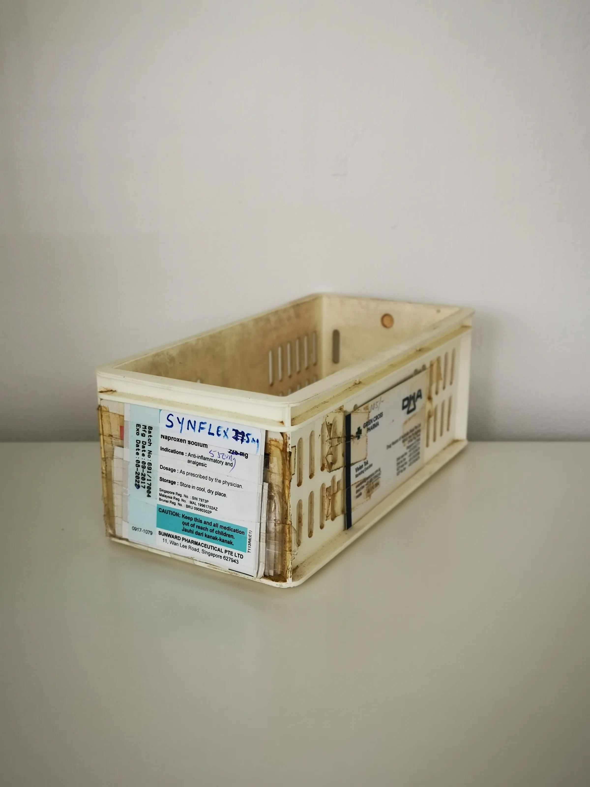
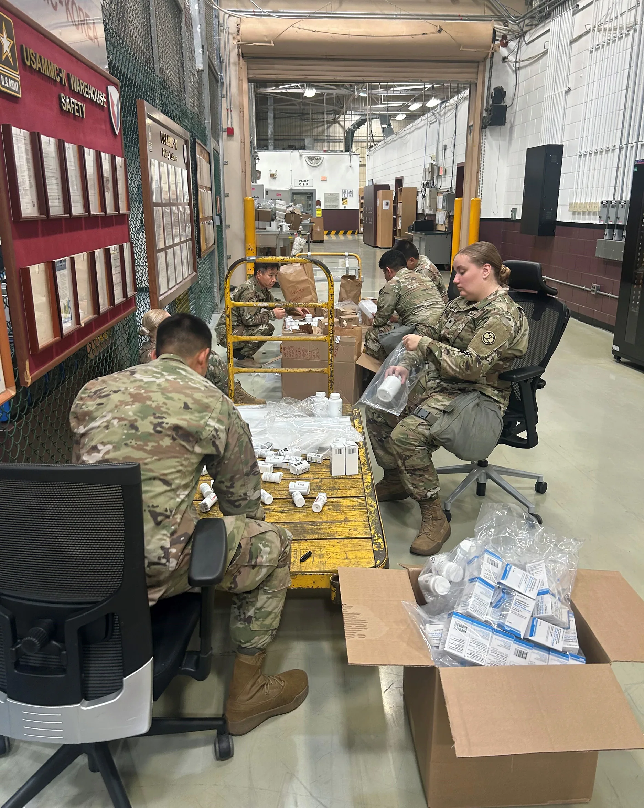

Discover the essential steps and insights for ordering from SOLA Medical Supply, tailored for clinics, spas, and distributors.
Ordering medical supplies can often feel overwhelming, especially for professional buyers in clinics, spas, and distribution businesses. With a myriad of products available, understanding the nuances of the ordering process is crucial to ensure that you receive the right products on time and at the best price. This guide aims to simplify the ordering process from SOLA Medical Supply, providing you with the necessary insights to make informed purchasing decisions.
Whether you are a seasoned buyer or new to sourcing medical supplies, knowing how to order from SOLA Medical Supply can significantly enhance your procurement strategy. This article will walk you through the steps, considerations, and best practices to streamline your ordering experience, ensuring that you can focus on what matters most—providing excellent care and services to your clients.
Key Takeaways
- Understand the product categories and specifications before placing an order to avoid mistakes.
- Evaluate your business needs to determine the appropriate quantities and variants for optimal inventory management.
- Communicate clearly with SOLA to ensure accurate quotations and product availability, minimizing delays.
- Be aware of the minimum order quantities (MOQ) to optimize your purchasing power and reduce costs.
- Plan your logistics, including shipping and documentation, to avoid unexpected delays and complications.
What this guide covers
- Understanding product categories
- Identifying relevant buyer scenarios
- Comparison criteria for ordering
- Checklist before requesting a quote
- Logistics and documentation considerations
- MOQ and reorder planning
- Common buyer FAQs
What buyers should understand first

SOLA Medical Supply offers a wide range of medical products tailored for various applications, including clinics, spas, and resellers. Understanding the specific categories of products available is essential for making informed decisions. These products may include medical consumables, equipment, and tools necessary for daily operations. Familiarizing yourself with the specifications, packaging options, and available brands will help you select the right items that meet your business needs.
For example, clinics may require items such as syringes, gloves, and diagnostic tools, while spas might focus on skincare products and treatment devices. Resellers need to evaluate the market demand for these products and ensure they have adequate stock levels to meet customer needs. By understanding the product landscape, you can make better purchasing decisions that align with your operational requirements.
Which buyers is this most relevant for?
This guide is particularly relevant for professional buyers working in clinics, spas, and distribution channels. Each of these business types has unique order planning needs. For instance, clinics may require consistent supplies for patient care, while spas might focus on sourcing products that enhance their service offerings. Resellers need to evaluate market demand and stock levels carefully. Understanding these scenarios will help buyers tailor their orders effectively.
Additionally, buyers in larger organizations may need to coordinate with multiple departments, ensuring that procurement aligns with budgetary constraints and operational goals. Smaller businesses may prioritize cost-effectiveness and quick turnaround times. Recognizing these differences will enable you to approach your orders with a tailored strategy that meets your specific business context.
How to compare options before ordering
When considering how to order from SOLA Medical Supply, it’s important to compare various options. Here are some practical criteria to keep in mind:
- Product Type: Ensure that the products meet your specific needs and standards. Different products may have varying applications and quality levels.
- Brand: Evaluate the reputation and reliability of the brands you are considering. Trusted brands often provide better quality assurance.
- Packaging: Check if the packaging meets your storage and handling requirements. Proper packaging can prevent damage and contamination.
- Batch/Expiry Visibility: Ensure that you can track product batches and expiry dates for compliance and safety reasons.
- Supplier Communication: Assess how responsive and informative the supplier is regarding your inquiries. Clear communication can prevent misunderstandings.
- Destination Requirements: Consider shipping regulations and requirements for your location, which may affect delivery times and costs.
Buyer checklist before requesting a quote


Before reaching out for a quote, ensure you have the following details ready:
- Product specifications and categories, including any specific brands you prefer.
- Desired quantities and variants to meet your operational needs.
- Shipping destination and any specific requirements, such as temperature control or special handling.
- Preferred packaging options to ensure product integrity during transit.
- Budget constraints and pricing expectations to align with your financial planning.
- Timeline for delivery to ensure that you have the products when needed.
Shipping, packing and documentation questions
Logistics play a critical role in the ordering process. When ordering from SOLA Medical Supply, consider the following logistics questions:
- What are the shipping options available for my location, and how do they affect delivery times?
- What documentation is required for shipping and customs clearance, especially for international orders?
- How will the products be packed to ensure they arrive safely and in good condition?
- What are the estimated shipping costs, and how can I budget for them?
- How can I track my order once it has been shipped to stay updated on its status?
MOQ, quotation and reorder planning
Understanding the minimum order quantities (MOQ) is essential for effective procurement. SOLA Medical Supply can assist you in confirming current availability and providing wholesale quotations. When planning your orders, consider the following:
- Determine the quantities needed based on your usage patterns and historical data.
- Identify any product variants that may be required to cater to different customer needs.
- Provide accurate destination details to avoid shipping issues and delays.
- Plan for reorder cycles to maintain stock levels without over-purchasing, ensuring you have enough inventory to meet demand.
FAQ
What is the minimum order quantity (MOQ) at SOLA Medical Supply?
The MOQ varies by product category. It’s best to confirm with SOLA for specific items to ensure compliance with purchasing requirements.
How can I request a quote from SOLA Medical Supply?
You can request a quote by contacting SOLA directly with your product specifications and quantities, ensuring a tailored response to your needs.
What shipping options are available?
SOLA offers various shipping options depending on your location and urgency of delivery, allowing you to choose the best fit for your business.
How do I track my order?
Once your order is shipped, SOLA will provide tracking information for your convenience, enabling you to monitor your shipment's progress.
Can I reorder products easily?
Yes, SOLA can assist with reorder planning to ensure you maintain adequate stock levels, simplifying your procurement process.
Contact SOLA for wholesale quotation via WhatsApp.
Planning a wholesale request?
Send product names, quantities and destination for a tailored discussion.
Contact SOLA on WhatsApp →General educational content for professional buyers. Not medical, legal, regulatory or import advice.
Image sources: Interior of Snow Clinic Ansan branch in March 2026.jpg 01.jpg by ELIZABETH XIONG (CC BY 4.0, 4284x5712 px); Medicine storage container 02.jpg by Wikimedia Commons contributor (CC0, 2736x3648 px); Sorting medical supplies (8662666).jpg by U.S. Army AMLC by C.J. Lovelace (Public domain, 1872x2347 px).